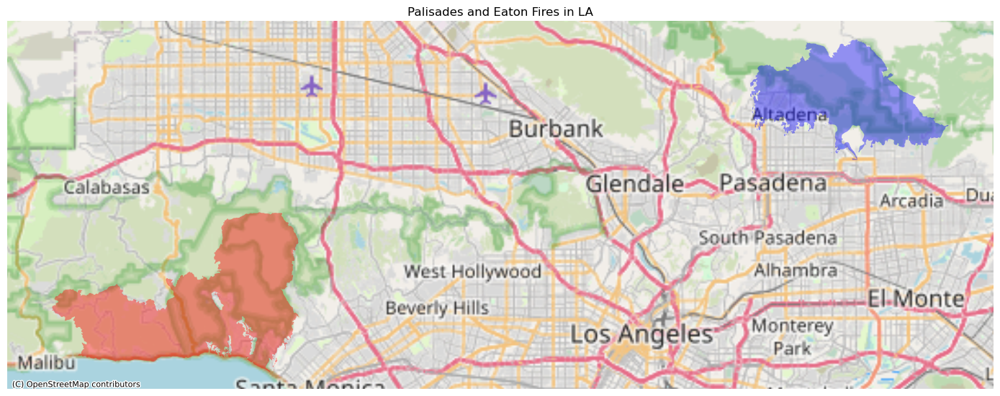
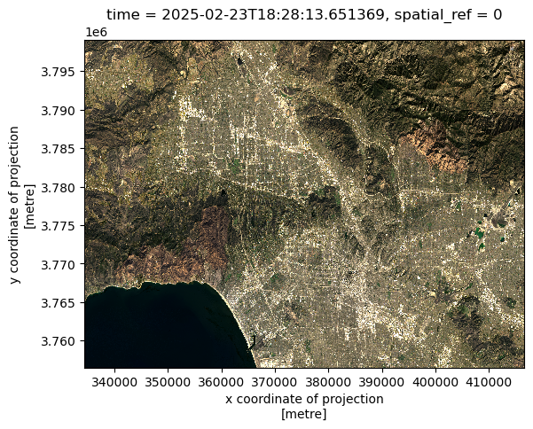

# Import necessary librariesimport osimport numpy as npimport pandas as pdimport geopandas as gpdimport xarray as xrimport rioxarray as rioimport matplotlib.pyplot as pltimport contextily as ctxfrom matplotlib_scalebar.scalebar import ScaleBar
# Spatial joinpalisade_soc = gpd.sjoin(left_df = eji, right_df = palisade,how ='inner')# Create geodf for the Eaton fire# Spatial joineaton_soc = gpd.sjoin(eji, eaton,how ='inner')# Clip the census tracts overlapping palisades to the boundary of the firepalisade_clip = gpd.clip(eji, palisade)eaton_clip = gpd.clip(eji, eaton)
Code
fig, ax = plt.subplots(1, 1, figsize=(14, 12))palisade.plot(ax=ax, color ="red", alpha =0.4)eaton.plot(ax=ax, color ="blue", alpha =0.4)# Add basemap using contextilyctx.add_basemap(ax, source=ctx.providers.OpenStreetMap.Mapnik, crs = palisade.crs)ax.set_title("Palisades and Eaton Fires in LA")ax.axis('off')plt.tight_layout()plt.show()

Code
fig, (ax1, ax2) = plt.subplots(1, 2, figsize=(15, 10))# UPDATE WITH YOU EJI VARIABLE FROM STEP 1eji_variable ='E_POV200'# Find common min/max for legend rangevmin =min(palisade_clip[eji_variable].min(), eaton_clip[eji_variable].min())vmax =max(palisade_clip[eji_variable].max(), eaton_clip[eji_variable].max())# Plot census tracts within Palisades perimeterpalisade_clip.plot( column= eji_variable, vmin=vmin, vmax=vmax, legend=False, ax=ax1,)ax1.set_title('Palisades Fire Census Overlap')ax1.axis('off')# Plot census tracts within Eaton perimetereaton_clip.plot( column=eji_variable, vmin=vmin, vmax=vmax, legend=False, ax=ax2,)ax2.set_title('Eaton Fire Census Overlap')ax2.axis('off')# Add overall titlefig.suptitle('Percent of Population in Poverty - Fire Areas Comparison')# Add shared colorbar at the bottomsm = plt.cm.ScalarMappable(norm=plt.Normalize(vmin=vmin, vmax=vmax))cbar_ax = fig.add_axes([0.25, 0.08, 0.5, 0.02]) # [left, bottom, width, height]cbar = fig.colorbar(sm, cax=cbar_ax, orientation='horizontal')cbar.set_label('PCTPOV')plt.show()
Code
# Find CRS of spatial reference in landsat data itselfcrs = landsat.spatial_ref.crs_wkt# Set the crs of landsat equal to that of the spatial referencelandsat.rio.write_crs(crs, inplace=True)# Create numpy array with true color bands true_col = landsat[["red", "green", "blue"]].to_array()# Fill missing values in landsat datalandsat = landsat.fillna(0)# Rerender plot without warningslandsat[["red", "green", "blue"]].to_array().plot.imshow(robust =True)
<matplotlib.image.AxesImage at 0x7f5488a9ac10>

Code
# Switch band order around to create false color imageplt.show(landsat[["swir22", "nir08", "red"]].to_array().plot.imshow(robust =True))
Code
# Filter for Palisades fire data from 2025palisade_perimeter = fires[(fires['fire_name'] =='PALISADES') & (fires['year_'] ==2025)]# Filter for Eaton fire 2025eaton_perimeter = fires[(fires['fire_name'] =='EATON') & (fires['year_'] ==2025)]# Change CRS of fires data to match that of landsat datapalisade_perimeter = palisade_perimeter.to_crs(crs ='EPSG:32611')eaton_perimeter = eaton_perimeter.to_crs(crs ='EPSG:32611')# Initialize plotfig, ax = plt.subplots(figsize = (10, 10))# Underlay landsat false color image plotlandsat[["swir22", "nir08", "red"]].to_array().plot.imshow(ax=ax, robust =True)# Add Palisade fire area onto plotpalisade_perimeter.plot(ax=ax, color ='red', alpha =0.5)# Add Eaton fire area onto ploteaton_perimeter.plot(ax=ax, color ="red", alpha =0.5)# Add informative titleplt.title("False Color Map of the Locations of January 2025 Los Angeles County Fires")# Add a scalebar with matplotlib ScaleBar functionscalebar = ScaleBar(dx =1, # Specify resolution of cell being measured units ='m', # Cells are 1m res location ="lower left") # Add to lower left of plotax.add_artist(scalebar)# Add compass arrow by initializing area on plot and sizex, y, arrow_length =0.95, 0.2, 0.15# Add annotation with text and arrow/textax.annotate('N', xy=(x, y), xytext=(x, y-arrow_length), arrowprops=dict(facecolor='black', width=2, headwidth=10), ha='center', va='center', fontsize=15, xycoords=ax.transAxes)# Add Palisade fire annotationfig.text(x =0.25, y =0.52, s ="Palisades fire", backgroundcolor ='white')# Add Eaton fire annotationfig.text(x =0.7, y =0.63, s ="Eaton fire", backgroundcolor ='white')# Add label to downtown Los Angeles for visual contextfig.text(x =0.56, y =0.4, s ="Los Angeles", color ='white', fontsize ='large')# Remove axes ticksax.set_xticks([]) ax.set_yticks([]) # Remove axes labelsax.set_xlabel("") ax.set_ylabel("") plt.show()
![]()